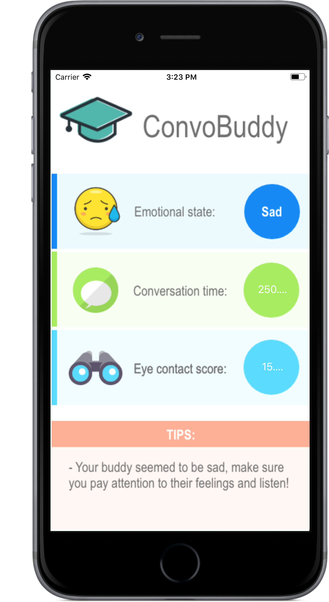

Some of My Projects,

ConvoBuddy,
Making Conversations Easier.
People with autism have a difficult time identifying emotions and engaging in social conversations. Our product is designed to help such individuals gain feedback about their ability to maintain eye contact and identify emotion from real conversations.
Our product uses a Raspberry Pi powered by Google's Cloud Vision API to determine the emotions of individuals in the capture and also the level of eye contact. This information is then pushed to a Firebase database which is referenced an iOS app used to display the information.
We were able to earn the Best Use of Google Cloud Platform during the QHacks 2019 Hackathon.